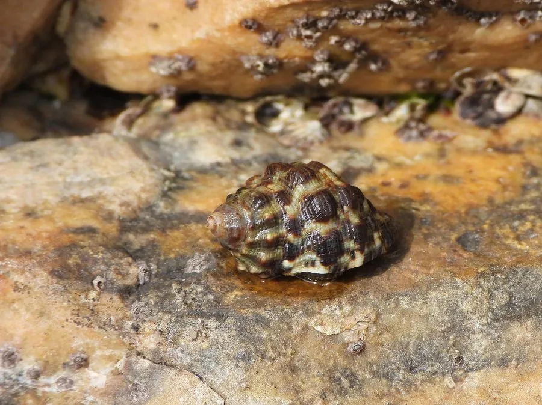

软体动物 · 动物界
荔枝螺 Thais clavigera

壳面有疣状突起和深色斑纹的小型骨螺，喜欢在岩礁上钻食牡蛎和藤壶，是牡蛎养殖中的常见敌害之一。
- 分类
- 门软体动物门纲腹足纲目新腹足目科骨螺科属荔枝螺属
- 栖息环境
- 岩礁海岸潮间带至水深数米的岩石表面，牡蛎和藤壶密集处
- 地理分布
- 西北太平洋沿岸，包括中国南北沿海、日本、朝鲜半岛和台湾
- 保护级别
- 尚无保护级别；为牡蛎养殖的常见敌害
物种志
荔枝螺的贝壳呈卵圆形，壳高约三至五厘米，壳质坚厚，壳面呈灰褐至黑褐色，有粗大的疣状突起和深色的斑块，螺层分明，壳口卵圆形，外唇内侧有齿状突起，前沟短。壳面粗糙，颜色斑驳，像荔枝的外壳，荔枝螺之名由此而来。足部宽大，能牢牢吸附在岩石上。它靠嗅觉寻找猎物，用足抱住牡蛎或藤壶，再用齿舌和酸性分泌物钻孔取食。
它分布于西北太平洋沿岸，包括中国南北沿海、日本、朝鲜半岛和台湾，栖息在岩礁海岸的潮间带至水深数米的岩石表面，尤其喜欢牡蛎和藤壶密集的礁石，常成群聚集。它是肉食性螺类，主要捕食牡蛎、藤壶、贻贝和其他小型贝类，是牡蛎养殖中的常见敌害。繁殖期在春夏，雌体产下卵鞘，卵鞘聚集成团附着在岩石上。它肉可食用，但个体小、肉少，目前尚无保护级别，种群数量受海岸开发和养殖活动影响。
形态与习性
- 食性钻食牡蛎、藤壶、贻贝等小型贝类
- 壳高约三至五厘米，壳面有疣状突起
- 取食方式抱住宿主后用齿舌和酸液钻孔
- 栖息环境潮间带至水深数米的岩礁表面
- 繁殖春夏产卵鞘，卵鞘成团附着岩石
- 影响牡蛎养殖中的常见敌害，也捕食藤壶
趣味知识
- 荔枝螺的壳面粗糙多疣，颜色斑驳，摸起来像荔枝壳，名字由此而来。
- 它能在牡蛎壳上钻出一个圆孔，再把吻伸进去吃掉里面的肉。
- 沿海渔民常把它敲碎取肉，用牙签挑着吃，味道辛辣，所以又叫辣螺。